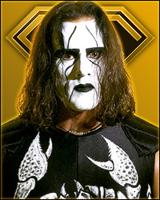
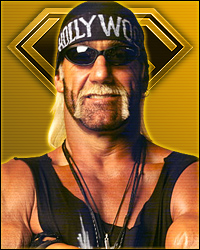

Глава 8. Шанс посреди хаоса
Перевод для VSplanet.net
Расставшись с Шерри, мы двинулись в новую программу с Баффом Багвеллом и Скоттом Нортоном. Скотт был огромным 150-килограммовым разрушителем, который стал известен, выиграв национальное первенство по арм-рестлингу. Их называли Vicious and Delicious. Мы бились с ними на шоу Road Wild 1997 в Стёрджисе — перед теми же самыми байкерами, что годом ранее засвидетельствовали нашу победу над Штайнерами.
Перед началом шоу произошел небольшо инцидент, который заставил меня понервничать, но зато стал поводом для многих улыбок. У Багвелла и Эрнеста Миллера, учителя Эрика Бишоффа по боевым искусствам, которого он сделал рестлером, возник большой конфликт. Багвелл узнал, что Миллер захаживает к его бывшей жене. И вот Багвелл напрыгнул на Миллера и попытался ударить его исподтишка, пока тот ел в буфете, который был в большой палатке. Однако он не рассчитал прыжок и не долетел. Перед тем, как он смог повторить, парней растащили. Я же смотрел на это и внезапно засмеялся так сильно, что подавился бургером. Отличный способ взбодриться перед шоу! Куда лучше кофе или курева!
Во время матча наш новый менеджер Жаклин, воспользовавшись тем, что судья ее не видел, забралась на ринг и прыгнула на спину Нортона, начав бить его по голове. Я удержал Нортона после Гарлемского Сайд-Кика в лицо, а затем Жаклин еще и придержала его ногу из-за ринга.
С самого начала Джекки не подходила нам. У нас не было нужного уровня сочетаемости, что была с Шерри. Мне кажется, что ее добавили к нам исключительно из-за цвета кожи: «Хм, она черная, куда бы ее поставить? Пекло Гарлема? Отлично! К сожалению, идея не работала, мы были очень странным трио. И это не было ее виной. Просто у нас не было «химии», несмотря на то, что мы с Лэшем пытались изо всех сил.
А еще впервые в жизни у меня начались серьезные отношения. Когда я жил в Атланте, я встречался с девушкой по имени Левестия. У нее был сын на год старше Брэндона, она жила с матерью, работала на государство, так что мне казалось, наши отношения были достаточно стабильными, а именно это мне было нужно после стольких лет хаоса. И несмотря на то, что я вернулся в Хьюстон, мы поддерживали отношения. Я ездил в Атланту, она иногда приезжала в Хьюстон. Наши сыновья хорошо поладили. И где-то в глубине души я думал, что она может заменить Брэндону мать. Мне казалось, это было наилучшим выходом для всех его многочисленных проблем. Было приятно, что мы с Брэндоном могли на кого-то положиться.
На работе же меня снова ожидали Багвелл и Нортон. Мы снова победили их на Nitro 18 августа в Бирмингеме. В тот день Джин Окерлунд вызвал Стинга, который спустился к рингу через аудиторию в своем плаще и с битой. Он указывал на плакаты, которые приносили зрители, и на которых они требовали матч Стинга и Хогана. Я не удивился бы, если бы узнал, что эти плакаты раздавали наши же сотрудники специально для этого сегмента. В любом случае, их матч замаячил на горизонте. Все пришло к тому, что матч, который должен был решить судьбу противостояния WCW и nWo, был запланирован на шоу Starrcade 1997.
Новый мировой порядок, поначалу состоявший из Голливуда Хогана, Скотта Холла и Кевина Нэша, к тому моменту существенно разросся. В группировку входили Сэвидж, Коннан, Гигант, Багвелл, Нортон, Сикс, Брайан Адамс, даже Винсент! Все хотели носить черное и белое. Группировка приносила большие деньги, в нее стремились и по вполне меркантильным причинам. Казалось, что будет логичнее сохранять небольшой, элитарный состав группы. В WWF, например, состав Дегенератов Х был достаточно эксклюзивным, и, как показало время, оказался крепче nWo.
Формула ДХ, состоявшей из Шона Майклза, Игрока, Роад Догга, Билли Ганна и огромной бодибилдерши Чайны, оказалась удачной. Они были сильны, они даже провели вторжение в WCW, когда они на военной машине с пушкой приехали к арене, на которой снималось шоу Nitro. Они кричали в мегафоны и требовали, чтобы к ним вышли. При этом они провоцировали оказавшихся рядом любителей рестлинга поскандировать гадости в адрес WCW. Игрок добрался до дверей и начал требовать, чтоб к нему вышли его друзья Холл и Нэш.
Это было потрясающе.
Что касается Пекла Гарлема, то нас снова ждали матчи с Штайнерами. Сначала на шоу Fall Brawl 1997 в Уинстон Салеме (Северная Каролина) 14 сентября. Увы, в тот день Лэш получил комбинацию немецкого суплекса Скотти и лариата Рика. На этом то шоу для Пекла завершилось.
19 сентября мы бились с ними в Сиэтле на домашнем шоу Battle in Seattle. Мне всегда казались немного странным бег рестлинг-канаты. А в тот день это чувство было особенно сильным. Честно, если ты с кем-то подрался, и тебя разгоняют в эти канаты, ты наверняка сделаешь ну максимум один шаг, потом развернешься и врежешь своему противнику, так же ведь? Даже если ты решишь добежать до канатов и оттолкнуться от них, ты побежишь обратно к противнику, чтобы он ударил тебя клоузлайном? Не знаю, я бы не стал. Я давно понял, что бег в канаты — это самая неправдоподобная часть рестлинга, и в тот день мои мысли разделяли все собравшиеся зрители. Когда Скотти разогна Лэша в канаты, произошел кромкий хлопок, после чего Рик упал на пол. Мы осмотрелись и поняли, что канаты теперь не натянуты, и довести матч до логичного завершения оказалось очень трудно. Тем не менее, мы продолжили. Когда меня, наконец, свернули и рефери отсчитал три удара, я услышал, как какой-то парень в зале закричал: «Эй, эти белые парни — обманщики!» Я с трудом сдержал смех.
5 октября я узнал, что от проблем с сердцем, которые не смогли выявить врачи, умер Брайан Пиллман. Несмотря на то, что Брайан в последнее время выступал в WWF, потерю остро переживали все мы. Это было настоящим ударом по индустрии. Его не зря называли «Loose Cannon» (безрассудный, бесконтрольный, слетевший с катушек) — он был дик и непредсказуем. Но эти новости напомнили всем, сколь хрупка человеческая жизнь. Со временем я терял многих своих друзей и соратников, и это каждый раз шокировало меня.
Я же на следующий день в Миннеаполисе победил Джеффа Джарретта в его последнем матче в WCW на два года. Он отправлялся в WWF. У него был предельно вспыльчивый персонаж, но в жизни это был максимально профессиональный работник. Каждый раз, встречаясь с ним на ринге, я был уверен, что он сделает для матча все возможное! Джефф был родом из достойной рестлинг-династии. Он был с юга и с детства дышал рестлингом. Но я о нем запомнил, что он не делил людей по цвету кожи. Он относился ко мне как к Мусорному Псу. Когда тот выходил на ринг под песню Queen «Another One Bites the Dust», зрители вскакивали на ноги, поскольку он был до безумия харизматичен. Именно так же ко мне относился Джефф: не как к черному парню, а как к человеку.
В эпоху, когда рестлеры судорожно цеплялись за любой шанс и держались за него мервтой хваткой, Джефф был готов дать свой тому, кто больше того заслуживал. И он делал наши матчи такими, что я выглядел на миллион. Я всегда буду ему за это благодарен.
В тот день мы работали с ним все так же легко и беспроблемно. Никто не сказал в его адрес ни единого плохого слова, пусть он и уходил к нашим конкурентам в поисках более выгодной карьеры.
17 ноября 1997 года Эрик Бишофф смог швырнуть большой пирог в лицо WWF. В тот день на Nitro в прямом эфире из ниоткуда появился Рик Руд. При этом на Raw он также был в эфире, поскольку то шоу шло в записи. Его контракт с WWF завершился, и он без предупреждения отправился в WCW, поскольку Бишофф выложил для него весьма большие деньги Теда Тёрнера. Так он решился вернуться в промоушн и оказаться на двух шоу одновременно. На нашем он вышел и прочитал промо, назвав WWF Титаником, раскритиковав Шона Майклза. На Raw он вышел с бородой, однако на Nitro он был со своими фирменными усами.
Убежден, что Винс был расстроен, однако за многие годы работы он научился, как вести себя во время грозы. Он понял, что рестлеры были разменными пешками на шоу. И тем не менее после того хода он наверняка захотел как-то Бишоффу отомстить.
Впрочем вернувшийся Руд был уже далеко не тот. Деньки надменного и восхитительного рестлера давно ушли. С того шоу WCW в Японии, на котором он получил травму спины, он не провел ни матча. Он потерял мышечную массу, было очевидно, что он не вернется на ринг. Так что мне было очень интересно, что же для него планируется.
Руд был замкнут. Пока остальные бродили по аренам, отпуская шутки и болтая ни о чем, Руд держался обособленно. Я не очень хорошо был с ним знаком, но иногда я видел, как он спит стоя. Тогда я этого не понимал, но это были признаки большой проблемы. На шоу он только читал промо и выступал менеджером Курта Хеннига в Новом Мировом Порядке. Но сам он при этом был где-то в своем мире, лишь получая в WCW деньги.
23 ноября в Обурн Хиллз состоялось очередное шоу World War 3, на котором был проведен очередной безумный Батл-роял на 60 человек. Его выиграл Скотт Холл.
На следующий день на Nitro в Сагино мы провели матч против Лиц Страха — Менга и Варвара. У них была репутация настоящих головорезов — если их, конечно, разозлить. Особенно этим славился Менг. О нем ходили кучи легенд, например, он как-то откусил нос человеку, который сказал в баре, что рестлинг — это не по-настоящему. Другому он двумя пальцами выдрал зубы, третьего вырубил одной лишь пощечиной. Кто-то рассказывал, что один раз, во время ареста, Менг разломал наручники, которые на него надели. Я также слышал, что он как-то в WWF повздорил с Брутусом Бифкейком и поднял его за шею. Несколько других рестлеров попытались его остановить, но лишь Халк Хоган смог его убедить это сделать.
Я и сам иногда дрался, так что уже умел сразу понять, справлюсь ли я с кем-то, если вдруг что, или нет. Менг был единственным, взглянув на которого один раз, я понял, что в случае драки мне ничего не светит. К счастью, мы никогда с ним не ругались, поэтому я так и не узнал, насколько правдивы ли все эти легенды. Со мной он всегда был добр и отзывчив. Но этого человека вообще никто не хотел ни злить, ни раздражать.
Матч в Сагино запустил нашу программу на домашних шоу. У нас также был бой на Nitro 1 декабря. Тогда Лэш отключился от «Смертельного захвата» Менга. Да, Лэш редко проигрывал наши матчи, но тогда это сделало Менга и Лица Страха куда более реально угрозой.
15 декабря на Nitro в Шарлотт у меня был очень сложный матч с Рэнди Сэвиджем. Это было шикарной возможностью поработать с Мачомэном, его взрывным характером и темпераментом.
28 декабря на шоу Starrcade 1997 состоялось долгожданное возвращение Стинга. Он бился с Голливудом Хоганом за Чемпионство Мира в тяжелом весе. Пекло пропускало это PPV, но мы были за кулисами.
— Starrcade 1997, мэйн-ивент —
за Чемпионство Мира в тяжелом весе
Стинг пр. Голливуд Хоган (ч)

п
Судит Ник Патрик
Альтернативные ссылки: ВКонтакте, Mail.RU
Когда эти двое встретились, это было той расплатой, которую многие фанаты ожидали 17 месяцев. Хоган вел себя как абсолютный злодей, он швырял его по заграждениям и валял по полу. Матч судил мой друг Ник Патрик, который долгое время играл предательского судью NWO. После того, как Хоган провел легдроп, он должен был быстро отсчитать три удара. Но что-то пошло не так, и Ник отсчитал достаточно медленно — недостаточно для того, чтоб возникло ощущение купленного финиша!
В зале появился недавно подписавший контракт с WCW Брет Харт. Он сам незадолго до того оказался жертвой реально некорректного судейства [прим. ред.: на Survivor Series 1997], так что, выйдя, он дал указание начать матч заново. Стинг зафиксировал Смертельный захват Скорпиона и победил.
Это было очень странно. Финиш матча был заботчен, ситуацию было принято решение исправлять объявлением титула вакантным. Эта парочка встретилась еще раз через пару месяцев, и Стинг еще раз выиграл титул (на Superbrawl VIII), объявив победу над nWo и утвердив свое место в роли главной надежды WCW.
А 29 декабря, в 14й день рождения Брэндона, я пережил свой самый большой триумф в WCW. В тот день на Nitro, прошедшем в Балтиморе, я даже не участвовал в матчах, просто записал для шоу заранее пару интервью. Я уже уходил с арены, когда ко мне подошли Лэш и один из агентов. Они сказали мне, что надо одеться и провести матч с Диско Инферно. Мне нужно было победить его и стать Телевизионным чемпионом.
— Выиграть титул? Серьезно??
Мне объяснили, что Рик Мартел, бывший Чемпион Мира AWA, бывшая звезда WWF, не взял с собой форму и потерял свой шанс.
— Это какая-то шутка?
Но они были предельно серьезны. Мартел думал, что его ожидают только записи интервью, он даже не привез сумку с вещами. Моя победа должна была стать временной — вскоре после нового года я должен был вернуть титул изначально запланированному владельцу. Они решили, что моя кандидатура подходит для потенциального матча с Мартелом, так что в этот день матч с Диско был моим!
Когда заиграла моя музыка, в первый раз я вышел лишь в штанах. Я всегда хотел выступать именно так, однако для Пекла нужен был наш командный костюм. Я решил, что тот день должен был стать началом моей сольной карьеры и визуально — я решил отойти от «Гарлемского» трико с кольцом.
Матч прошел замечательно. Диско был одет в стиле 70х, у него была невероятная харизма. Он был очень популярен. Что касается работы, он был безупречен, что меня искренне восхищало. Мы интуитивно работали вместе, понимая, что и как может провести каждый из нас. Это был образцовый пример того, как два рестлера могут провести матч, рассказав серьезную историю.
Смотря тот матч в повторе, я обратил внимание на комментарий. Мне не понравилось, что Шавоне и Хинан говорили о чем угодно, но не о том, что было на ринге. Мы с Диско вели матч, разрывая зал и зрителей, а они обсуждали Хогана, Флэра и NWO.
Это было ошибкой, которую в WCW постоянно совершали. Комментаторы должны продвигать рестлеров на ринге, а не рекламировать Doritos или вспоминать события двухнедельной давности, чем они постоянно были заняты во время первых матчей.
Нам с Диско они посвятили около трех минут, а матч длился шесть с половиной. Но у нас с Диско был контакт со зрителем! Мы им нравились. Они чувствовали, что наступает мой звездный час! В конце я провел Диско Гарлемский Сайд-слэм, потом показал наверх и забрался на канаты. Я провел «Похмелье», а затем удержание и стал новым Телевизионным Чемпионом Мира WCW! Когда судья вручил мне пояс, я посмотрел в камеру и сказал, что сделал это для Брэндона. Я поздравил его и сказал, что скоро буду дома! Зрители на трибунах прыгали от радости. А когда я обернулся, на ринг поднялся Лэш. Он обнял меня. Это был момент, который не описать словами, и который я не забуду никогда.
В общем, 1998й я встречал, направляясь по дороге на самый верх. Планом было все еще вернуть титул Мартелу, однако я был намерен выступать еще более усердно, чтобы показать, что достоин титула. Все, что мне было нужно, — это пара недель, после которых я заставил бы их забыть о Мартеле. Я планировал сделать так, чтобы зрители сами потребовали оставить меня чемпионом. Если бы мне дали две недели защит на Saturday Night, ни у кого бы не осталось вопросов, что правильное решение уже было сделано в тот день, когда мы бились с Диско.
Мое Чемпионство не означало, что Пеклу пришел конец. Мы с Лэшем по-прежнему колесили по стране в роли крутых парней с 110й улицы. Это просто означало, что у меня была двойная роль. Иногда за один день я выступал и с братом, и отдельно.
И кстати мне удалось выбить из руководства более денежный контракт. С самого начала мы с Лэшем получали одинаково, но когда мои чеки стали больше, Лэш не стал возмущаться.
Когда мы только начинали — в Хьюстонском WWA и Далласком GWF, Лэш всегда получал пуш, потому что был больше. Он был основной ударной силой нашей команды, как-то он даже стал Чемпином Северной Америки. Тогда я прикрывал его спину и говорил ему «Иди и стань Чемпионом!»
И притом, что я не особо котировался, многие за кулисами подходили ко мне и говорили, что говоря по правде, мой брат хорош, но во мне есть что-то особенное. Я лишь надеялся, что в один прекрасный день смогу сделать так, чтоб брат гордился мной.
Проведя парочку матчей против Высокого Напряжения — команды Робби Рэйджа и Кенни Каоса, — Лэш получил травму. Он надорвал мышцу ноги и выбыл из строя на несколько месяцев, отправившись лечиться в Хьюстон.
А я сосредоточился на защите телевизионного титула.
Первая была в Georgia Dome на Nitro 5 января — я легко победил Принца Яукеа [прим. ред.: именно на этом шоу травмировался Стиви Рэй]. Затем в the Forum (Рим, Джорджия) я еще раз победил Диско. Мне удалось зажечь зрителей и впечатлить начальство.
Тем временем Бишофф планировал увеличить нашу Империю, создав совершенно новое двухчасовое шоу под названием Thunder. Его начали записывать по вторникам, а в эфир оно выходило по четвергам на TBS в 20:00. Это было для меня еще одним шансом забраться по лестнице!
18 января мы выступали в Шривпорте, где я защитил ТВ-титул от Менга, избегнув его Тонганского смертельного захвата. Учитывая, что Шривпорт был неподалеку от города, где я родился — Плэйн Дилинга, — я смог также повидаться со своими родственниками: дядюшками, тетушками и кучей народа, которые называли себя моими кузенами. Они и поверить не могли, что кто-то из их городка смог добиться такого успеха и попасть на ТВ. Да что там, я и сам не мог поверить.
На следующий день в Superdome в Новом Орлеане (Nitro 19 января) начался наш с Мартелом сюжет. После того, как я «Похмельем» победил Мортиса, на меня напал его партнер Ярость. Меня избивали вдвоем, но на помощь пришел как раз Рик Мартел. В результате я обещал ему титульный матч на PPV Souled Out 1998, которое прошло 24 января в Дэйтоне, и на котором фэйс претендент Мартел бился против фэйса Чемпиона Букера Т.
Матч сложился великолепно. Что и говорить, Рик был потрясающим атлетом. Работать с ним было одно удовольствие. Я же в то время работал над своими приемами, чтобы в случае чего быть готовым к любой ситуации. Например, когда я промазал обычным дропом локтем (которым я всегда промахиваюсь), я перехожу к брейкдансовой прокрутке, которую позже назовут Спинаруни. Затем я поднимаюсь и провожу Гарлем-Сайдкик. Когда подошло время завершать матч, я провел Гарлемский сайдслэм, а затем добил его «Похмельем» и удержал. Когда шоу завершилось, Мартел забрал пояс Чемпиона у судьи, лично передал его мне и поднял мою руку. Это было потрясающее зрелище, частью которого я был очень горд быть.
Наши дела не были закончены, поэтому мы вернулись к противостоянию тремя неделями спустя.
А пока этого не произошло, я защитил титул еще пару раз от талантливого и жесткого Перри Сатурна — в Форт Уэйне и Мемфисе. Каждый раз его группировка «Стая», состоявшая из Ворона, Кидмана, Сик Боя, Лоди и Риггза, вмешивалась, после чего меня спасал именно Мартел.
31 января в Бостоне я бился с Майком Ротундой, который ранее в WWF исполнял известного персонажа IRS, а у нас выступал под именем Майкл Уоллстрит. Майк был известным по всему миру рестлером, одним из самых талантливых за все времена! Быть с ним на одном ринге и наблюдать его работу было просто невероятно! Мы провели хороший матч, я удержал его после удара ногой с разворота. Ротунда повел себя в этом матче как профессионал.
Через неделю Nitro прошло в Сан Антонио, на арене Alamodome. Я бился со Стивеном Регалом в присутствии 20 тысяч орущих фанатов Нового Мирового Порядка. Регал обладал неповторимым стилем и уникальным набором приемов, среди которых были Европейский апперкот и фирменный удар двумя коленями из прыжка. Я отреагировал на эти приемы так, будто он убил меня. Поняв, сколь он хорош, я позволил ему вести матч. А когда настало время, он снизил темп и позволил мне провести Гарлемский Сайдкик, после которого я его удержал.
За Регалом также было крайне интересно наблюдать. Причем не только в плане рестлинга. Вместе с нами выступал настоящая суперзвезда своей эпохи. Билл Голдберг, 190 сантиметров роста, 130 килограммов веса. Это был наш ответ Стиву Остину, который провел своей первый матч в сентябре предыдущего года. Он выглядел как боец UFC, однако матч с Регалом показал ему, что рестлинг может быть куда опаснее.
Через неделю после шоу в Сан Антонио Регал решил проучить Голдберга на национальном ТВ. Мне казалось, что он был убежден, что Голдберг был неумехой и не смог бы одолеть и обычный мешок. Стивен решил поприветствовать его в нашей индустрии, проведя реальынй матч. Он проводил жестковатые удары и скрутил Билла в бараний рог. Голдберг был ощутимо впечатлён и потрясен.
Когда все было кончено, парни за кулисами были в шоке от того, что у Регала хватило смелости на такой шаг. Ему втихаря жали руки и хлопали по спине. Насколько я знаю, Голдберг никому не сказал ни слова.
16 февраля в Тампе мы с Риком провели матч-реванш. Я уступил ему титул, однако не обошлось без инцидента. Все пошло не так, когда Рик неудачно ударился ногами о канаты и порвал связки в правом колене. Он даже виду не подал, попытался продолжить. Сатурн забрался на апрон, чтобы вмешаться в матч, а Рик врезал ему, сбив вниз. Мы же завершили матч, когда Рик запер меня в «Квебекский Краб» и стал новым — травмированным — чемпионом. После того мы обсудили матч, Рику было неудобно, но я на него не был обижен.
Учитывая его травму, Рик должен был вернуть мне титул. Это произошло 22 февраля на шоу SuperBrawl VIII в Сан Франциско. Это был последний матч Рика в WCW. В его каждом движении сквозила боль, но он постарался вложить в матч все, на что был способен. Мы провели 10-минутный бой, в конце которого я выиграл Телевизионное Чемпионство Мира.
У матча было условие, что Сатурн, сидевший у ринга, получит право на матч за ТВ-титул. И как только я удержал Мартела после Сайдкика, он стремительной росомахой прорвался на ринг и запер меня в «Кольца Сатурна». Второй матч подряд стал для меня серьезным вызовом, однако я справился. Я попросил Сатурна повести матч, пока не обрету второе дыхание. Через некоторое время я пришел в себя и был готов. Я предложил биться в полную силу, и мы провели матч на пределе наших возможностей. До сих пор считаю этот матч своим самым физически и психологически изматывающих в своей карьере.
И по сценарию я удержал Сатурна после Сайдкика, сохранив Телевизионное Чемпионство Мира.
И снова Букер фантазирует. Травму Мартел получил именно на SuperBrawl VIII. Это хорошо заметно на записи — полчив бросок, Мартел падает, его ноги попадают на канаты, от чего он и получил разрыв связок и перелом. Более того, Рик получил еще повреждение в результате неаккуратного «Гарлемского Сайдкика». По сценарию, именно Рик должен был победить и сохранить Чемпионство, после чего провести матч с Сатурном. Но в результате победу пришлось отдать Букеру, после чего нападение на него Перри было совершенно непонятным, а их матч — импровизацией.
Мартел вылечился и вернулся на ринг 13 июля, проведя матч против Стиви Рэя. И лишь после этого он завершил карьеру, перейдя на тренерскую и комментаторскую работу.
Оглавление книги